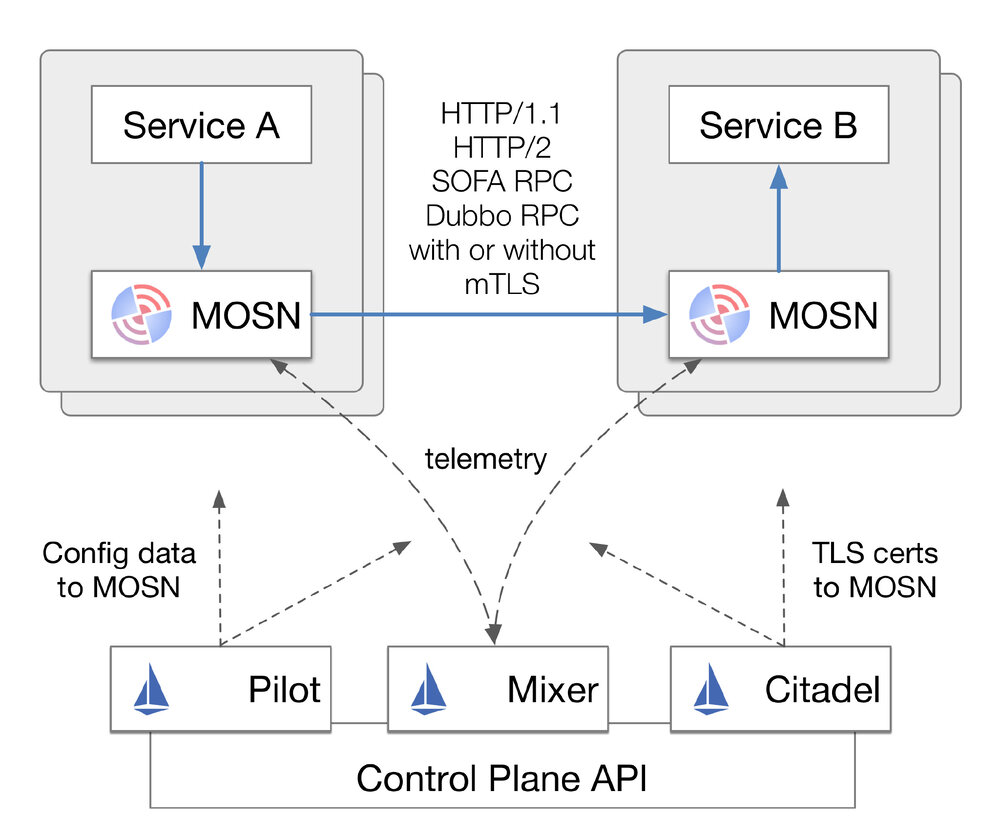
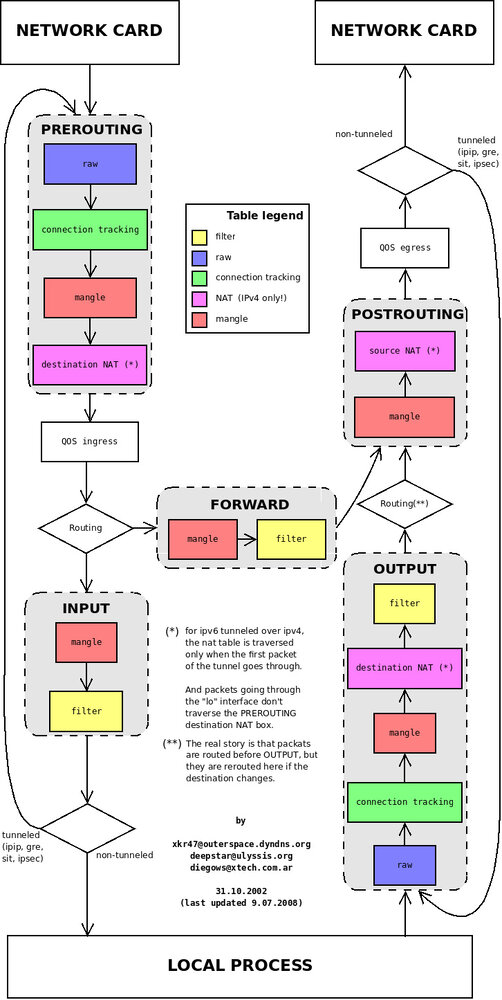
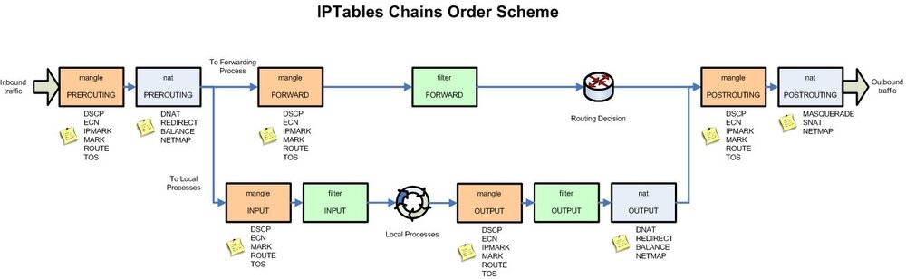
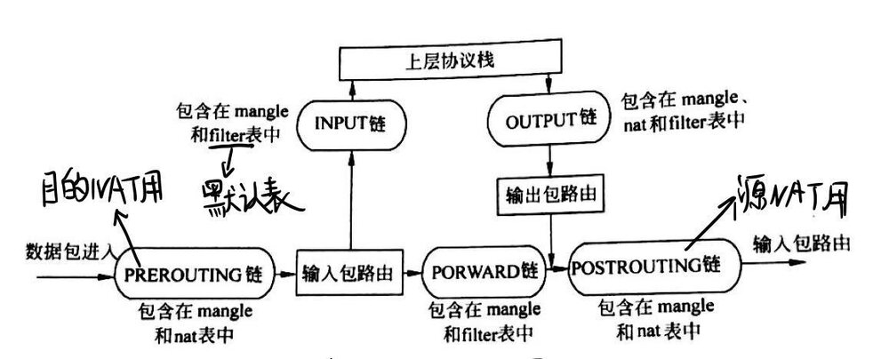
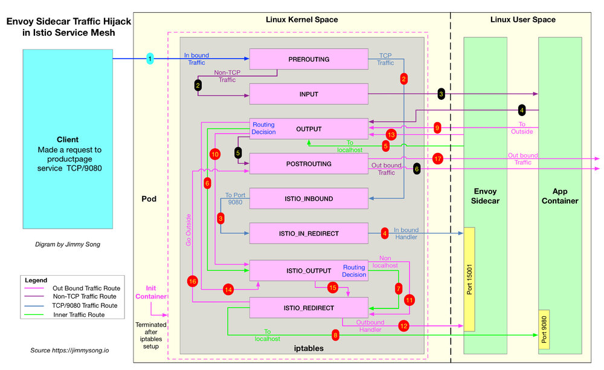
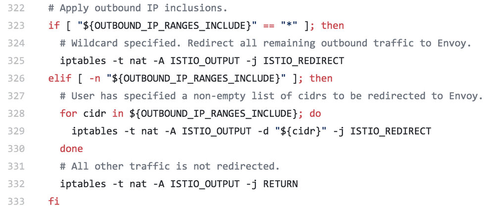
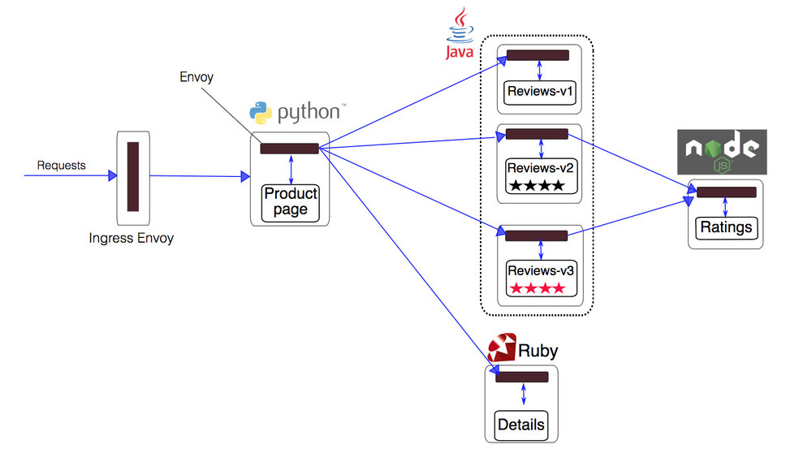

以往有很多文章讲解 Istio 是如何做 Sidecar 注入的，但是没有讲解注入之后 Sidecar 工作的细节。本文将带大家详细了解 Istio 是如何将 Envoy 作为 Sidecar 的方式注入到应用程序 Pod 中，及 Sidecar 是如何做劫持流量的。
在讲解 Istio 如何将 Envoy 代理注入到应用程序 Pod 中之前，我们需要先了解以下几个概念：
- Sidecar 模式：容器应用模式之一，Service Mesh 架构的一种实现方式。
- Init 容器：Pod 中的一种专用的容器，在应用程序容器启动之前运行，用来包含一些应用镜像中不存在的实用工具或安装脚本。
- iptables：流量劫持是通过 iptables 转发实现的。
查看目前 productpage-v1-745ffc55b7-2l2lw Pod 中运行的容器：
$ kubectl -n default get pod productpage-v1-745ffc55b7-2l2lw -o=jsonpath='{..spec.containers[*].name}'
productpage istio-proxy
productpage 即应用容器，istio-proxy 即 Envoy 代理的 sidecar 容器。另外该 Pod 中实际上还运行过一个 Init 容器，因为它执行结束就自动终止了，所以我们看不到该容器的存在。关注 jsonpath 的用法请参考 JSONPath Support。
Sidecar 模式
在了解 Istio 使用 Sidecar 注入之前，需要先说明下什么是 Sidecar 模式。Sidecar 是容器应用模式的一种，也是在 Service Mesh 中发扬光大的一种模式，详见 Service Mesh 架构解析，其中详细描述了节点代理和 Sidecar 模式的 Service Mesh 架构。
使用 Sidecar 模式部署服务网格时，无需在节点上运行代理（因此您不需要基础结构的协作），但是集群中将运行多个相同的 Sidecar 副本。从另一个角度看：我可以为一组微服务部署到一个服务网格中，你也可以部署一个有特定实现的服务网格。在 Sidecar 部署方式中，你会为每个应用的容器部署一个伴生容器。Sidecar 接管进出应用容器的所有流量。在 Kubernetes 的 Pod 中，在原有的应用容器旁边运行一个 Sidecar 容器，可以理解为两个容器共享存储、网络等资源，可以广义的将这个注入了 Sidecar 容器的 Pod 理解为一台主机，两个容器共享主机资源。
例如下图 SOFAMesh & MOSN—基于Istio构建的用于应对大规模流量的Service Mesh解决方案的架构图中描述的，MOSN 作为 Sidecar 的方式和应用运行在同一个 Pod 中，拦截所有进出应用容器的流量，SOFAMesh 兼容 Istio，其中使用 Go 语言开发的 MOSN 替换了 Envoy。

注意：下文中所指的 Sidecar 都是指的 Envoy 代理容器。
Init 容器
Init 容器是一种专用容器，它在应用程序容器启动之前运行，用来包含一些应用镜像中不存在的实用工具或安装脚本。
一个 Pod 中可以指定多个 Init 容器，如果指定了多个，那么 Init 容器将会按顺序依次运行。只有当前面的 Init 容器必须运行成功后，才可以运行下一个 Init 容器。当所有的 Init 容器运行完成后，Kubernetes 才初始化 Pod 和运行应用容器。
Init 容器使用 Linux Namespace，所以相对应用程序容器来说具有不同的文件系统视图。因此，它们能够具有访问 Secret 的权限，而应用程序容器则不能。
在 Pod 启动过程中，Init 容器会按顺序在网络和数据卷初始化之后启动。每个容器必须在下一个容器启动之前成功退出。如果由于运行时或失败退出，将导致容器启动失败，它会根据 Pod 的 restartPolicy 指定的策略进行重试。然而，如果 Pod 的 restartPolicy 设置为 Always，Init 容器失败时会使用 RestartPolicy 策略。
在所有的 Init 容器没有成功之前，Pod 将不会变成 Ready 状态。Init 容器的端口将不会在 Service 中进行聚集。 正在初始化中的 Pod 处于 Pending 状态，但应该会将 Initializing 状态设置为 true。Init 容器运行完成以后就会自动终止。
关于 Init 容器的详细信息请参考 Init 容器 - Kubernetes 中文指南/云原生应用架构实践手册。
Sidecar 注入示例分析
我们看下 Istio 官方示例 bookinfo 中 productpage 的 YAML 配置，关于 bookinfo 应用的详细 YAML 配置请参考 bookinfo.yaml。
apiVersion: v1
kind: Service
metadata:
name: productpage
labels:
app: productpage
spec:
ports:
- port: 9080
name: http
selector:
app: productpage
---
apiVersion: extensions/v1beta1
kind: Deployment
metadata:
name: productpage-v1
spec:
replicas: 1
template:
metadata:
labels:
app: productpage
version: v1
spec:
containers:
- name: productpage
image: istio/examples-bookinfo-productpage-v1:1.8.0
imagePullPolicy: IfNotPresent
ports:
- containerPort: 9080
再查看下 productpage 容器的 Dockerfile。
FROM python:2.7-slim
COPY requirements.txt ./
RUN pip install --no-cache-dir -r requirements.txt
COPY productpage.py /opt/microservices/
COPY templates /opt/microservices/templates
COPY requirements.txt /opt/microservices/
EXPOSE 9080
WORKDIR /opt/microservices
CMD python productpage.py 9080
我们看到 Dockerfile 中没有配置 ENTRYPOINT，所以 CMD 的配置 python productpage.py 9080 将作为默认的 ENTRYPOINT，记住这一点，再看下注入 sidecar 之后的配置。
$ istioctl kube-inject -f yaml/istio-bookinfo/bookinfo.yaml
我们只截取其中与 productpage 相关的 Service 和 Deployment 配置部分。
apiVersion: v1
kind: Service
metadata:
name: productpage
labels:
app: productpage
spec:
ports:
- port: 9080
name: http
selector:
app: productpage
---
apiVersion: extensions/v1beta1
kind: Deployment
metadata:
creationTimestamp: null
name: productpage-v1
spec:
replicas: 1
strategy: {}
template:
metadata:
annotations:
sidecar.istio.io/status: '{"version":"fde14299e2ae804b95be08e0f2d171d466f47983391c00519bbf01392d9ad6bb","initContainers":["istio-init"],"containers":["istio-proxy"],"volumes":["istio-envoy","istio-certs"],"imagePullSecrets":null}'
creationTimestamp: null
labels:
app: productpage
version: v1
spec:
containers:
- image: istio/examples-bookinfo-productpage-v1:1.8.0
imagePullPolicy: IfNotPresent
name: productpage
ports:
- containerPort: 9080
resources: {}
- args:
- proxy
- sidecar
- --configPath
- /etc/istio/proxy
- --binaryPath
- /usr/local/bin/envoy
- --serviceCluster
- productpage
- --drainDuration
- 45s
- --parentShutdownDuration
- 1m0s
- --discoveryAddress
- istio-pilot.istio-system:15007
- --discoveryRefreshDelay
- 1s
- --zipkinAddress
- zipkin.istio-system:9411
- --connectTimeout
- 10s
- --statsdUdpAddress
- istio-statsd-prom-bridge.istio-system:9125
- --proxyAdminPort
- "15000"
- --controlPlaneAuthPolicy
- NONE
env:
- name: POD_NAME
valueFrom:
fieldRef:
fieldPath: metadata.name
- name: POD_NAMESPACE
valueFrom:
fieldRef:
fieldPath: metadata.namespace
- name: INSTANCE_IP
valueFrom:
fieldRef:
fieldPath: status.podIP
- name: ISTIO_META_POD_NAME
valueFrom:
fieldRef:
fieldPath: metadata.name
- name: ISTIO_META_INTERCEPTION_MODE
value: REDIRECT
image: jimmysong/istio-release-proxyv2:1.0.0
imagePullPolicy: IfNotPresent
name: istio-proxy
resources:
requests:
cpu: 10m
securityContext:
privileged: false
readOnlyRootFilesystem: true
runAsUser: 1337
volumeMounts:
- mountPath: /etc/istio/proxy
name: istio-envoy
- mountPath: /etc/certs/
name: istio-certs
readOnly: true
initContainers:
- args:
- -p
- "15001"
- -u
- "1337"
- -m
- REDIRECT
- -i
- '*'
- -x
- ""
- -b
- 9080,
- -d
- ""
image: jimmysong/istio-release-proxy_init:1.0.0
imagePullPolicy: IfNotPresent
name: istio-init
resources: {}
securityContext:
capabilities:
add:
- NET_ADMIN
privileged: true
volumes:
- emptyDir:
medium: Memory
name: istio-envoy
- name: istio-certs
secret:
optional: true
secretName: istio.default
status: {}
我们看到 Service 的配置没有变化，所有的变化都在 Deployment 里，Istio 给应用 Pod 注入的配置主要包括：
- Init 容器
istio-init：用于给 Sidecar 容器即 Envoy 代理做初始化，设置 iptables 端口转发 - Envoy sidecar 容器
istio-proxy：运行 Envoy 代理
接下来将分别解析下这两个容器。
Init 容器解析
Istio 在 Pod 中注入的 Init 容器名为 istio-init，我们在上面 Istio 注入完成后的 YAML 文件中看到了该容器的启动参数：
-p 15001 -u 1337 -m REDIRECT -i '*' -x "" -b 9080 -d ""
我们再检查下该容器的 Dockerfile 看看 ENTRYPOINT 是什么以确定启动时执行的命令。
FROM ubuntu:xenial
RUN apt-get update && apt-get install -y \
iproute2 \
iptables \
&& rm -rf /var/lib/apt/lists/*
ADD istio-iptables.sh /usr/local/bin/
ENTRYPOINT ["/usr/local/bin/istio-iptables.sh"]
我们看到 istio-init 容器的入口是 /usr/local/bin/istio-iptables.sh 脚本，再按图索骥看看这个脚本里到底写的什么，该脚本的位置在 Istio 源码仓库的 tools/deb/istio-iptables.sh，一共 300 多行，就不贴在这里了。下面我们就来解析下这个启动脚本。
Init 容器启动入口
Init 容器的启动入口是 /usr/local/bin/istio-iptables.sh 脚本，该脚本的用法如下：
$ istio-iptables.sh -p PORT -u UID -g GID [-m mode] [-b ports] [-d ports] [-i CIDR] [-x CIDR] [-h]
-p: 指定重定向所有 TCP 流量的 Envoy 端口（默认为 $ENVOY_PORT = 15001）
-u: 指定未应用重定向的用户的 UID。通常，这是代理容器的 UID（默认为 $ENVOY_USER 的 uid，istio_proxy 的 uid 或 1337）
-g: 指定未应用重定向的用户的 GID。（与 -u param 相同的默认值）
-m: 指定入站连接重定向到 Envoy 的模式，“REDIRECT” 或 “TPROXY”（默认为 $ISTIO_INBOUND_INTERCEPTION_MODE)
-b: 逗号分隔的入站端口列表，其流量将重定向到 Envoy（可选）。使用通配符 “*” 表示重定向所有端口。为空时表示禁用所有入站重定向（默认为 $ISTIO_INBOUND_PORTS）
-d: 指定要从重定向到 Envoy 中排除（可选）的入站端口列表，以逗号格式分隔。使用通配符“*” 表示重定向所有入站流量（默认为 $ISTIO_LOCAL_EXCLUDE_PORTS）
-i: 指定重定向到 Envoy（可选）的 IP 地址范围，以逗号分隔的 CIDR 格式列表。使用通配符 “*” 表示重定向所有出站流量。空列表将禁用所有出站重定向（默认为 $ISTIO_SERVICE_CIDR）
-x: 指定将从重定向中排除的 IP 地址范围，以逗号分隔的 CIDR 格式列表。使用通配符 “*” 表示重定向所有出站流量（默认为 $ISTIO_SERVICE_EXCLUDE_CIDR）。
环境变量位于 $ISTIO_SIDECAR_CONFIG（默认在：/var/lib/istio/envoy/sidecar.env）
通过查看该脚本你将看到，以上传入的参数都会重新组装成 iptables 命令的参数。
再参考 istio-init 容器的启动参数，完整的启动命令如下：
$ /usr/local/bin/istio-iptables.sh -p 15001 -u 1337 -m REDIRECT -i '*' -x "" -b 9080 -d ""
该容器存在的意义就是让 Envoy 代理可以拦截所有的进出 Pod 的流量，即将入站流量重定向到 Sidecar，再拦截应用容器的出站流量经过 Sidecar 处理后再出站。
命令解析
这条启动命令的作用是：
- 将应用容器的所有流量都转发到 Envoy 的 15001 端口。
- 使用
istio-proxy用户身份运行， UID 为 1337，即 Envoy 所处的用户空间，这也是istio-proxy容器默认使用的用户，见 YAML 配置中的runAsUser字段。 - 使用默认的
REDIRECT模式来重定向流量。 - 将所有出站流量都重定向到 Envoy 代理。
- 将所有访问 9080 端口（即应用容器
productpage的端口）的流量重定向到 Envoy 代理。
因为 Init 容器初始化完毕后就会自动终止，因为我们无法登陆到容器中查看 iptables 信息，但是 Init 容器初始化结果会保留到应用容器和 Sidecar 容器中。
istio-proxy 容器解析
为了查看 iptables 配置，我们需要登陆到 Sidecar 容器中使用 root 用户来查看，因为 kubectl 无法使用特权模式来远程操作 docker 容器，所以我们需要登陆到 productpage Pod 所在的主机上使用 docker 命令登陆容器中查看。
查看 productpage Pod 所在的主机。
$ kubectl -n default get pod -l app=productpage -o wide
NAME READY STATUS RESTARTS AGE IP NODE
productpage-v1-745ffc55b7-2l2lw 2/2 Running 0 1d 172.33.78.10 node3
从输出结果中可以看到该 Pod 运行在 node3 上，使用 vagrant 命令登陆到 node3 主机中并切换为 root 用户。
$ vagrant ssh node3
$ sudo -i
查看 iptables 配置，列出 NAT（网络地址转换）表的所有规则，因为在 Init 容器启动的时候选择给 istio-iptables.sh 传递的参数中指定将入站流量重定向到 Envoy 的模式为 “REDIRECT”，因此在 iptables 中将只有 NAT 表的规格配置，如果选择 TPROXY 还会有 mangle 表配置。iptables 命令的详细用法请参考 iptables，规则配置请参考 iptables 规则配置。
理解 iptables
iptables 是 Linux 内核中的防火墙软件 netfilter 的管理工具，位于用户空间，同时也是 netfilter 的一部分。Netfilter 位于内核空间，不仅有网络地址转换的功能，也具备数据包内容修改、以及数据包过滤等防火墙功能。
在了解 Init 容器初始化的 iptables 之前，我们先来了解下 iptables 和规则配置。
下图展示了 iptables 调用链。

iptables 中的表
Init 容器中使用的的 iptables 版本是 v1.6.0，共包含 5 张表：
raw用于配置数据包，raw中的数据包不会被系统跟踪。filter是用于存放所有与防火墙相关操作的默认表。nat用于 网络地址转换（例如：端口转发）。mangle用于对特定数据包的修改（参考损坏数据包）。security用于强制访问控制 网络规则。
注：在本示例中只用到了 nat 表。
不同的表中的具有的链类型如下表所示：
| 规则名称 | raw | filter | nat | mangle | security |
|---|---|---|---|---|---|
| PREROUTING | ✓ | ✓ | ✓ | ||
| INPUT | ✓ | ✓ | ✓ | ✓ | |
| OUTPUT | ✓ | ✓ | ✓ | ✓ | |
| POSTROUTING | ✓ | ✓ | |||
| FORWARD | ✓ | ✓ | ✓ | ✓ |
下图是 iptables 的调用链顺序。

关于 iptables 的详细介绍请参考常见 iptables 使用规则场景整理。
iptables 命令
iptables 命令的主要用途是修改这些表中的规则。iptables 命令格式如下：
$ iptables [-t 表名] 命令选项［链名]［条件匹配］[-j 目标动作或跳转］
Init 容器中的 /istio-iptables.sh 启动入口脚本就是执行 iptables 初始化的。
理解 iptables 规则
查看 istio-proxy 容器中的默认的 iptables 规则，默认查看的是 filter 表中的规则。
$ iptables -L -v
Chain INPUT (policy ACCEPT 350K packets, 63M bytes)
pkts bytes target prot opt in out source destination
Chain FORWARD (policy ACCEPT 0 packets, 0 bytes)
pkts bytes target prot opt in out source destination
Chain OUTPUT (policy ACCEPT 18M packets, 1916M bytes)
pkts bytes target prot opt in out source destination
我们看到三个默认的链，分别是 INPUT、FORWARD 和 OUTPUT，每个链中的第一行输出表示链名称（在本例中为INPUT/FORWARD/OUTPUT），后跟默认策略（ACCEPT）。
下图是 iptables 的建议结构图，流量在经过 INPUT 链之后就进入了上层协议栈，比如

每条链中都可以添加多条规则，规则是按照顺序从前到后执行的。我们来看下规则的表头定义。
- pkts：处理过的匹配的报文数量
- bytes：累计处理的报文大小（字节数）
- target：如果报文与规则匹配，指定目标就会被执行。
- prot：协议，例如
tdp、udp、icmp和all。 - opt：很少使用，这一列用于显示 IP 选项。
- in：入站网卡。
- out：出站网卡。
- source：流量的源 IP 地址或子网，后者是
anywhere。 - destination：流量的目的地 IP 地址或子网，或者是
anywhere。
还有一列没有表头，显示在最后，表示规则的选项，作为规则的扩展匹配条件，用来补充前面的几列中的配置。prot、opt、in、out、source 和 destination 和显示在 destination 后面的没有表头的一列扩展条件共同组成匹配规则。当流量匹配这些规则后就会执行 target。
关于 iptables 规则请参考常见iptables使用规则场景整理。
target 支持的类型
target 类型包括 ACCEPT、REJECT、DROP、LOG 、SNAT、MASQUERADE、DNAT、REDIRECT、RETURN 或者跳转到其他规则等。只要执行到某一条链中只有按照顺序有一条规则匹配后就可以确定报文的去向了，除了 RETURN 类型，类似编程语言中的 return 语句，返回到它的调用点，继续执行下一条规则。target 支持的配置详解请参考 iptables 详解（1）：iptables 概念。
从输出结果中可以看到 Init 容器没有在 iptables 的默认链路中创建任何规则，而是创建了新的链路。
查看 iptables nat 表中注入的规则
Init 容器通过向 iptables nat 表中注入转发规则来劫持流量的，下图显示的是 productpage 服务中的 iptables 流量劫持的详细过程。

Init 容器启动时命令行参数中指定了 REDIRECT 模式，因此只创建了 NAT 表规则，接下来我们查看下 NAT 表中创建的规则，这是全文中的重点部分，前面讲了那么多都是为它做铺垫的。下面是查看 nat 表中的规则，其中链的名字中包含 ISTIO 前缀的是由 Init 容器注入的，规则匹配是根据下面显示的顺序来执行的，其中会有多次跳转。
# 查看 NAT 表中规则配置的详细信息
$ iptables -t nat -L -v
# PREROUTING 链：用于目标地址转换（DNAT），将所有入站 TCP 流量跳转到 ISTIO_INBOUND 链上
Chain PREROUTING (policy ACCEPT 0 packets, 0 bytes)
pkts bytes target prot opt in out source destination
2 120 ISTIO_INBOUND tcp -- any any anywhere anywhere
# INPUT 链：处理输入数据包，非 TCP 流量将继续 OUTPUT 链
Chain INPUT (policy ACCEPT 2 packets, 120 bytes)
pkts bytes target prot opt in out source destination
# OUTPUT 链：将所有出站数据包跳转到 ISTIO_OUTPUT 链上
Chain OUTPUT (policy ACCEPT 41146 packets, 3845K bytes)
pkts bytes target prot opt in out source destination
93 5580 ISTIO_OUTPUT tcp -- any any anywhere anywhere
# POSTROUTING 链：所有数据包流出网卡时都要先进入POSTROUTING 链，内核根据数据包目的地判断是否需要转发出去，我们看到此处未做任何处理
Chain POSTROUTING (policy ACCEPT 41199 packets, 3848K bytes)
pkts bytes target prot opt in out source destination
# ISTIO_INBOUND 链：将所有目的地为 9080 端口的入站流量重定向到 ISTIO_IN_REDIRECT 链上
Chain ISTIO_INBOUND (1 references)
pkts bytes target prot opt in out source destination
2 120 ISTIO_IN_REDIRECT tcp -- any any anywhere anywhere tcp dpt:9080
# ISTIO_IN_REDIRECT 链：将所有的入站流量跳转到本地的 15001 端口，至此成功的拦截了流量懂啊 Envoy
Chain ISTIO_IN_REDIRECT (1 references)
pkts bytes target prot opt in out source destination
2 120 REDIRECT tcp -- any any anywhere anywhere redir ports 15001
# ISTIO_OUTPUT 链：选择需要重定向到 Envoy（即本地） 的出站流量，所有非 localhost 的流量全部转发到 ISTIO_REDIRECT。为了避免流量在该 Pod 中无限循环，所有到 istio-proxy 用户空间的流量都返回到它的调用点中的下一条规则，本例中即 OUTPUT 链，因为跳出 ISTIO_OUTPUT 规则之后就进入下一条链 POSTROUTING。如果目的地非 localhost 就跳转到 ISTIO_REDIRECT；如果流量是来自 istio-proxy 用户空间的，那么就跳出该链，返回它的调用链继续执行下一条规则（OUPT 的下一条规则，无需对流量进行处理）；所有的非 istio-proxy 用户空间的目的地是 localhost 的流量就跳转到 ISTIO_REDIRECT
Chain ISTIO_OUTPUT (1 references)
pkts bytes target prot opt in out source destination
0 0 ISTIO_REDIRECT all -- any lo anywhere !localhost
40 2400 RETURN all -- any any anywhere anywhere owner UID match istio-proxy
0 0 RETURN all -- any any anywhere anywhere owner GID match istio-proxy
0 0 RETURN all -- any any anywhere localhost
53 3180 ISTIO_REDIRECT all -- any any anywhere anywhere
# ISTIO_REDIRECT 链：将所有流量重定向到 Envoy（即本地） 的 15001 端口
Chain ISTIO_REDIRECT (2 references)
pkts bytes target prot opt in out source destination
53 3180 REDIRECT tcp -- any any anywhere anywhere redir ports 15001
iptables 显示的链的顺序，即流量规则匹配的顺序。其中要特别注意 ISTIO_OUTPUT 链中的规则配置。为了避免流量一直在 Pod 中无限循环，所有到 istio-proxy 用户空间的流量都返回到它的调用点中的下一条规则，本例中即 OUTPUT 链，因为跳出 ISTIO_OUTPUT 规则之后就进入下一条链 POSTROUTING。
ISTIO_OUTPUT 链规则匹配的详细过程如下：
- 如果目的地非 localhost 就跳转到 ISTIO_REDIRECT 链
- 所有来自 istio-proxy 用户空间的非 localhost 流量跳转到它的调用点
OUTPUT继续执行OUTPUT链的下一条规则，因为OUTPUT链中没有下一条规则了，所以会继续执行POSTROUTING链然后跳出 iptables，直接访问目的地 - 如果流量不是来自 istio-proxy 用户空间，又是对 localhost 的访问，那么就跳出 iptables，直接访问目的地
- 其它所有d情况都跳转到
ISTIO_REDIRECT链
其实在最后这条规则前还可以增加 IP 地址过滤，让某些 IP 地址段不通过 Envoy 代理。

以上 iptables 规则都是 Init 容器启动的时使用 istio-iptables.sh 脚本生成的，详细过程可以查看该脚本。
查看 Envoy 运行状态
首先查看 proxyv2 镜像的 Dockerfile。
FROM istionightly/base_debug
ARG proxy_version
ARG istio_version
# 安装 Envoy
ADD envoy /usr/local/bin/envoy
# 使用环境变量的方式明文指定 proxy 的版本/功能
ENV ISTIO_META_ISTIO_PROXY_VERSION "1.1.0"
# 使用环境变量的方式明文指定 proxy 明确的 sha，用于指定版本的配置和调试
ENV ISTIO_META_ISTIO_PROXY_SHA $proxy_version
# 环境变量，指定明确的构建号，用于调试
ENV ISTIO_META_ISTIO_VERSION $istio_version
ADD pilot-agent /usr/local/bin/pilot-agent
ADD envoy_pilot.yaml.tmpl /etc/istio/proxy/envoy_pilot.yaml.tmpl
ADD envoy_policy.yaml.tmpl /etc/istio/proxy/envoy_policy.yaml.tmpl
ADD envoy_telemetry.yaml.tmpl /etc/istio/proxy/envoy_telemetry.yaml.tmpl
ADD istio-iptables.sh /usr/local/bin/istio-iptables.sh
COPY envoy_bootstrap_v2.json /var/lib/istio/envoy/envoy_bootstrap_tmpl.json
RUN chmod 755 /usr/local/bin/envoy /usr/local/bin/pilot-agent
# 将 istio-proxy 用户加入 sudo 权限以允许执行 tcpdump 和其他调试命令
RUN useradd -m --uid 1337 istio-proxy && \
echo "istio-proxy ALL=NOPASSWD: ALL" >> /etc/sudoers && \
chown -R istio-proxy /var/lib/istio
# 使用 pilot-agent 来启动 Envoy
ENTRYPOINT ["/usr/local/bin/pilot-agent"]
该容器的启动入口是 pilot-agent 命令，根据 YAML 配置中传递的参数，详细的启动命令入下：
/usr/local/bin/pilot-agent proxy sidecar --configPath /etc/istio/proxy --binaryPath /usr/local/bin/envoy --serviceCluster productpage --drainDuration 45s --parentShutdownDuration 1m0s --discoveryAddress istio-pilot.istio-system:15007 --discoveryRefreshDelay 1s --zipkinAddress zipkin.istio-system:9411 --connectTimeout 10s --statsdUdpAddress istio-statsd-prom-bridge.istio-system:9125 --proxyAdminPort 15000 --controlPlaneAuthPolicy NONE
主要配置了 Envoy 二进制文件的位置、服务发现地址、服务集群名、监控指标上报地址、Envoy 的管理端口、热重启时间等，详细用法请参考 Istio官方文档 pilot-agent 的用法。
pilot-agent 是容器中 PID 为 1 的启动进程，它启动时又创建了一个 Envoy 进程，如下：
/usr/local/bin/envoy -c /etc/istio/proxy/envoy-rev0.json --restart-epoch 0 --drain-time-s 45 --parent-shutdown-time-s 60 --service-cluster productpage --service-node sidecar~172.33.78.10~productpage-v1-745ffc55b7-2l2lw.default~default.svc.cluster.local --max-obj-name-len 189 -l warn --v2-config-only
我们分别解释下以上配置的意义。
-c /etc/istio/proxy/envoy-rev0.json：配置文件，支持.json、.yaml、.pb和.pb_text格式，pilot-agent启动的时候读取了容器的环境变量后创建的。--restart-epoch 0：Envoy 热重启周期，第一次启动默认为 0，每热重启一次该值加 1。--drain-time-s 45：热重启期间 Envoy 将耗尽连接的时间。--parent-shutdown-time-s 60： Envoy 在热重启时关闭父进程之前等待的时间。--service-cluster productpage：Envoy 运行的本地服务集群的名字。--service-node sidecar~172.33.78.10~productpage-v1-745ffc55b7-2l2lw.default~default.svc.cluster.local：定义 Envoy 运行的本地服务节点名称，其中包含了该 Pod 的名称、IP、DNS 域等信息，根据容器的环境变量拼出来的。-max-obj-name-len 189：cluster/route_config/listener 中名称字段的最大长度（以字节为单位）-l warn：日志级别--v2-config-only：只解析 v2 引导配置文件
详细配置请参考 Envoy 的命令行选项。
查看 Envoy 的配置文件 /etc/istio/proxy/envoy-rev0.json。
{
"node": {
"id": "sidecar~172.33.78.10~productpage-v1-745ffc55b7-2l2lw.default~default.svc.cluster.local",
"cluster": "productpage",
"metadata": {
"INTERCEPTION_MODE": "REDIRECT",
"ISTIO_PROXY_SHA": "istio-proxy:6166ae7ebac7f630206b2fe4e6767516bf198313",
"ISTIO_PROXY_VERSION": "1.0.0",
"ISTIO_VERSION": "1.0.0",
"POD_NAME": "productpage-v1-745ffc55b7-2l2lw",
"istio": "sidecar"
}
},
"stats_config": {
"use_all_default_tags": false
},
"admin": {
"access_log_path": "/dev/stdout",
"address": {
"socket_address": {
"address": "127.0.0.1",
"port_value": 15000
}
}
},
"dynamic_resources": {
"lds_config": {
"ads": {}
},
"cds_config": {
"ads": {}
},
"ads_config": {
"api_type": "GRPC",
"refresh_delay": {"seconds": 1, "nanos": 0},
"grpc_services": [
{
"envoy_grpc": {
"cluster_name": "xds-grpc"
}
}
]
}
},
"static_resources": {
"clusters": [
{
"name": "xds-grpc",
"type": "STRICT_DNS",
"connect_timeout": {"seconds": 10, "nanos": 0},
"lb_policy": "ROUND_ROBIN",
"hosts": [
{
"socket_address": {"address": "istio-pilot.istio-system", "port_value": 15010}
}
],
"circuit_breakers": {
"thresholds": [
{
"priority": "default",
"max_connections": "100000",
"max_pending_requests": "100000",
"max_requests": "100000"
},
{
"priority": "high",
"max_connections": "100000",
"max_pending_requests": "100000",
"max_requests": "100000"
}]
},
"upstream_connection_options": {
"tcp_keepalive": {
"keepalive_time": 300
}
},
"http2_protocol_options": { }
}
,
{
"name": "zipkin",
"type": "STRICT_DNS",
"connect_timeout": {
"seconds": 1
},
"lb_policy": "ROUND_ROBIN",
"hosts": [
{
"socket_address": {"address": "zipkin.istio-system", "port_value": 9411}
}
]
}
]
},
"tracing": {
"http": {
"name": "envoy.zipkin",
"config": {
"collector_cluster": "zipkin"
}
}
},
"stats_sinks": [
{
"name": "envoy.statsd",
"config": {
"address": {
"socket_address": {"address": "10.254.109.175", "port_value": 9125}
}
}
}
]
}
下图是使用 Istio 管理的 bookinfo 示例的访问请求路径图。

图片来自 Istio 官方网站
对照 bookinfo 示例的 productpage 的查看建立的连接。在 productpage-v1-745ffc55b7-2l2lw Pod 的 istio-proxy 容器中使用 root 用户查看打开的端口。
$ lsof -i
COMMAND PID USER FD TYPE DEVICE SIZE/OFF NODE NAME
envoy 11 istio-proxy 9u IPv4 73951 0t0 TCP localhost:15000 (LISTEN) # Envoy admin 端口
envoy 11 istio-proxy 17u IPv4 74320 0t0 TCP productpage-v1-745ffc55b7-2l2lw:46862->istio-pilot.istio-system.svc.cluster.local:15010 (ESTABLISHED) # 15010：istio-pilot 的 grcp-xds 端口
envoy 11 istio-proxy 18u IPv4 73986 0t0 UDP productpage-v1-745ffc55b7-2l2lw:44332->istio-statsd-prom-bridge.istio-system.svc.cluster.local:9125 # 给 Promethues 发送 metric 的端口
envoy 11 istio-proxy 52u IPv4 74599 0t0 TCP *:15001 (LISTEN) # Envoy 的监听端口
envoy 11 istio-proxy 53u IPv4 74600 0t0 UDP productpage-v1-745ffc55b7-2l2lw:48011->istio-statsd-prom-bridge.istio-system.svc.cluster.local:9125 # 给 Promethues 发送 metric 端口
envoy 11 istio-proxy 54u IPv4 338551 0t0 TCP productpage-v1-745ffc55b7-2l2lw:15001->172.17.8.102:52670 (ESTABLISHED) # 52670：Ingress gateway 端口
envoy 11 istio-proxy 55u IPv4 338364 0t0 TCP productpage-v1-745ffc55b7-2l2lw:44046->172.33.78.9:9091 (ESTABLISHED) # 9091：istio-telemetry 服务的 grpc-mixer 端口
envoy 11 istio-proxy 56u IPv4 338473 0t0 TCP productpage-v1-745ffc55b7-2l2lw:47210->zipkin.istio-system.svc.cluster.local:9411 (ESTABLISHED) # 9411: zipkin 端口
envoy 11 istio-proxy 58u IPv4 338383 0t0 TCP productpage-v1-745ffc55b7-2l2lw:41564->172.33.84.8:9080 (ESTABLISHED) # 9080：details-v1 的 http 端口
envoy 11 istio-proxy 59u IPv4 338390 0t0 TCP productpage-v1-745ffc55b7-2l2lw:54410->172.33.78.5:9080 (ESTABLISHED) # 9080：reivews-v2 的 http 端口
envoy 11 istio-proxy 60u IPv4 338411 0t0 TCP productpage-v1-745ffc55b7-2l2lw:35200->172.33.84.5:9091 (ESTABLISHED) # 9091:istio-telemetry 服务的 grpc-mixer 端口
envoy 11 istio-proxy 62u IPv4 338497 0t0 TCP productpage-v1-745ffc55b7-2l2lw:34402->172.33.84.9:9080 (ESTABLISHED) # reviews-v1 的 http 端口
envoy 11 istio-proxy 63u IPv4 338525 0t0 TCP productpage-v1-745ffc55b7-2l2lw:50592->172.33.71.5:9080 (ESTABLISHED) # reviews-v3 的 http 端口
从输出级过上可以验证 Sidecar 是如何接管流量和与 istio-pilot 通信，及向 Mixer 做遥测数据汇聚的。感兴趣的读者可以再去看看其他几个服务的 istio-proxy 容器中的 iptables 和端口信息。
参考
- [SOFAMesh & SOFA MOSN—基于Istio构建的用于应对大规模流量的Service Mesh解决方案 - jimmysong.io](https://jimmysong.io/posts/sofamesh-and-mosn-proxy-sidecar-service-mesh-by-ant-financial/ - jimmysong.io)
- Init 容器 - Kubernetes 中文指南/云原生应用架构实践手册 - jimmysong.io
- JSONPath Support - kubernetes.io
- iptables 命令使用说明 - wangchujiang.com
- How To List and Delete Iptables Firewall Rules - digitalocean.com
- 一句一句解说 iptables的详细中文手册 - cnblog.com
- 常见iptables使用规则场景整理 - aliang.org